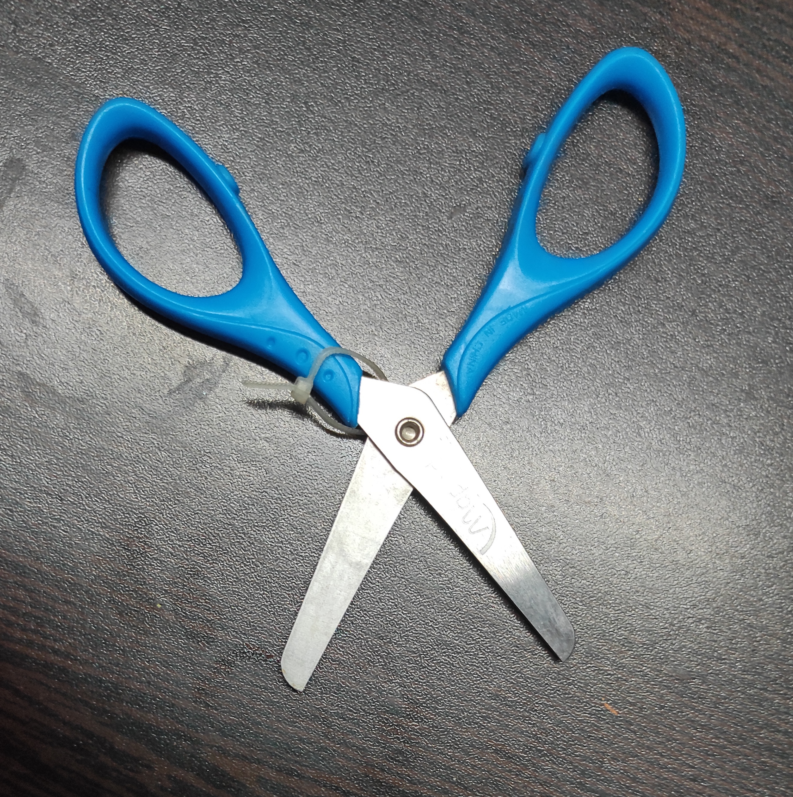

-
Test Image -

-
Test Image -

-
Test Image -

-
Test Image -

-
Test Image -

-
Test Image -

- Test Image - 
-
Test Image -

-
Test Image -

Output on GOOGLE LENS- Window Air Conditioner
Output on MOBILE NET- Window shade
Result-
GOOGLE LENS is more accurate
Output on GOOGLE LENS- Milton Pro Water Bottle
Output on MOBILE NET- Bottle
Result-
Both, GOOGLE LENS and MOBILE NET were accurate this time.
Output on GOOGLE LENS- Iron Decorative Piece
Output on MOBILE NET- Shower Curtain
Result-
None of them were correct this time
Output on GOOGLE LENS- Safety Glasses
Output on MOBILE NET- Stethoscope
Result-
None of them wre correct this time.
Output on GOOGLE LENS- Freinds Forever cup
Output on MOBILE NET- handle
Result-
GOOGLE LENS was more accurate.
Output on GOOGLE LENS- pencil
Output on MOBILE NET- pencil
Result-
Both were correct this time
Output on GOOGLE LENS- Scissors
Output on MOBILE NET- lighter
Result-
GOOGLE LENS is more accurate.
Output on GOOGLE LENS- fork
Output on MOBILE NET- spoon
Result-
MOBILE NET was more accurate.
Output on GOOGLE LENS- Switch board
Output on MOBILE NET- switch
Result-
GOOGLE LENS was more accurate this time.
I have tested 10 images. GOOGLE LENS identified 6 of them and MOBILE NET identified 3 of them. So, according to this Case Study, GOOGLE LENS was more accurate.